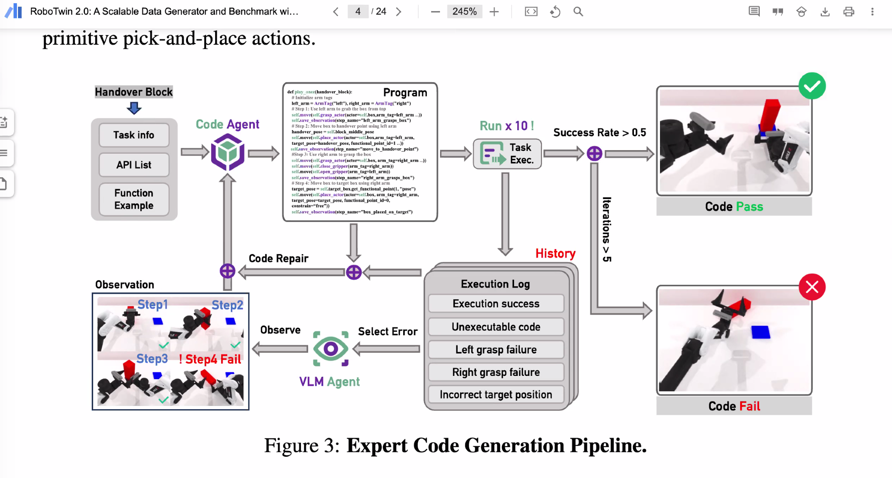
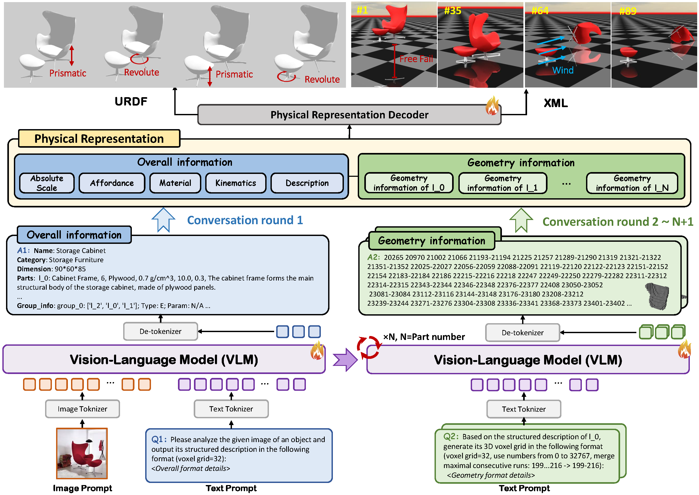
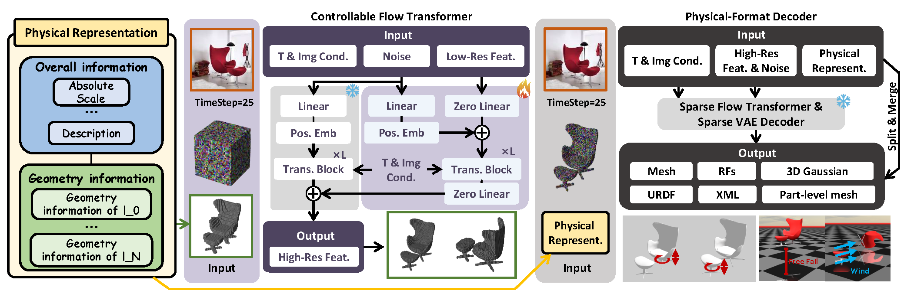
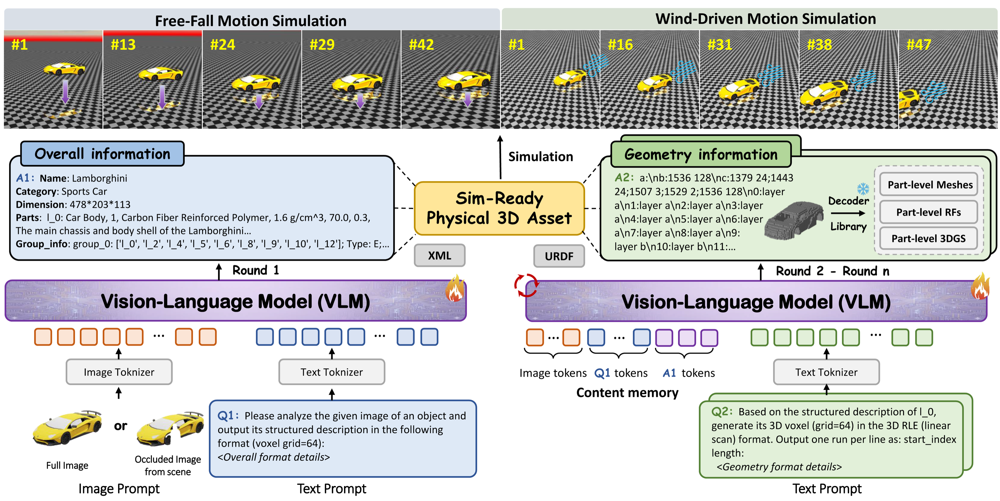
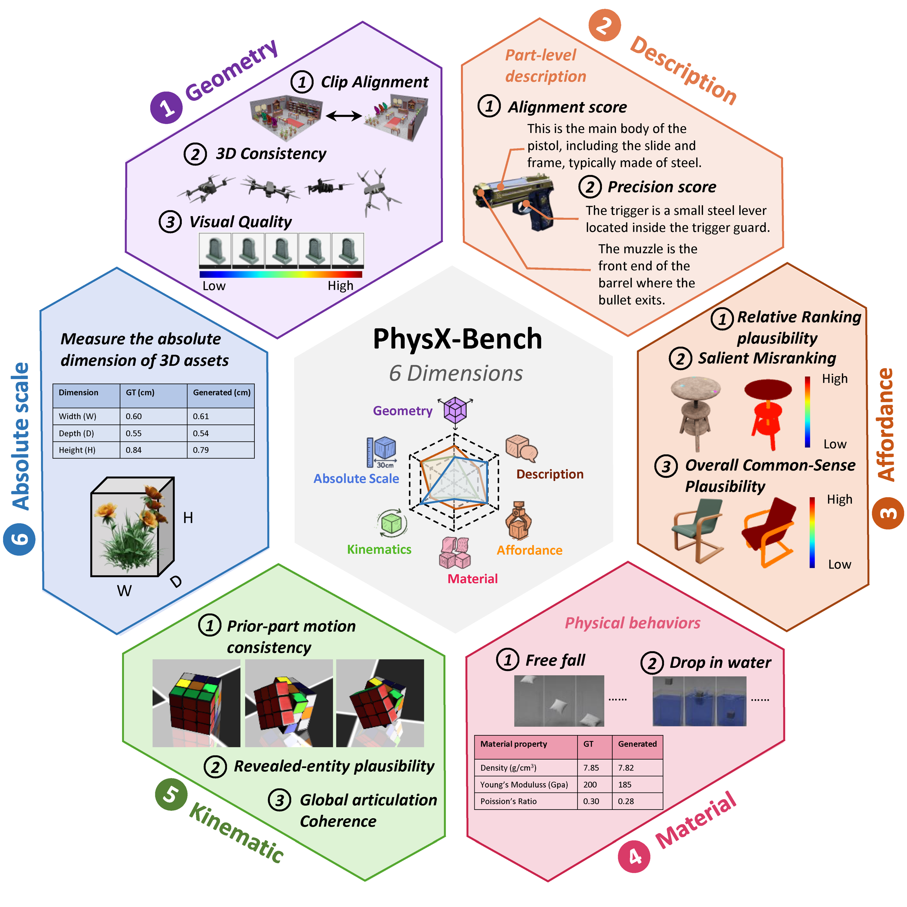

当前动作
用 The Gemini 408 作为第一阶段场地，先满足团队落地、设备调试、数据采集和对外展示的基本需求。
Weekly Brief
本页汇总三个当前需要推进的事项：Romoya 场地按方案一和 Clement 拍板；UMI WAN2.2 微调需要确认算力并扩充 2 号机存储；Self-Improving Agents 收敛到“场景想象 + test-time training”的 AgenticSim 仿真闭环。
Operational note
这部分只作为本周工具风险记录，不展开成主要议题。
Claude Code 账号本周出现被封 / 无法正常使用的情况。当前推测原因是 ME 和 SoC 两边同时使用同一账号，导致登录物理位置或网络位置看起来异常。后续需要避免同一账号在不同地点并发使用，并准备 Codex、本地脚本或其他账号作为 fallback，防止周报、实验和远端调度被单一工具账号卡住。
Venue conclusion
这部分保留为周报开头；UMI 的算力/存储 TODO 和 Self-Improving Agents proposal 作为后面的项目更新。
建议口径：我们已经向两边确认过关键条款。Grace 的整租方案需要约 S$12,000/月、三年起租、三个月押金，且价格基本谈不动，因此不适合作为当前启动方案。建议先推进 The Gemini 方案一，并把 408 到 409 的切换作为可选机会。
Plan 1
核心优势是快、便宜、灵活；核心风险是 409 不能保证未来仍空着。
用 The Gemini 408 作为第一阶段场地，先满足团队落地、设备调试、数据采集和对外展示的基本需求。
已确认：408 换到 409 不算退租，前提是 409 当时还没有被别人租走。
不能保证 409 到时候还在，所以不能把 409 写成必然 upgrade；只能写成 optional relocation / expansion opportunity。
Plan 2 check
这部分建议只作为“为什么不选方案二”的证据，不要在 Clement 会上继续花太多时间。
可以说我们已经 check 过更大方案，但它把启动问题变成长期重资产承诺，不符合当前阶段。除非 Grace 后续大幅改变价格、租期或储物条件，否则不建议继续推进。
Presentation script
建议按“事实确认、方案判断、请求拍板”的顺序讲，不要把会议带回全量场地比较。
我们刚刚确认了两边回复。The Gemini 408 后续换 409 不算退租，但 409 未来是否还空着不能保证；Grace 的整租方案需要 S$12,000/月、三年起租、三个月押金，基本没有议价空间，所以方案二不现实。建议我们先推进方案一，用 408 作为启动场地，把 409 作为如果还空着就切换的机会。
请 Clement 批准我们按方案一继续谈 The Gemini：先锁一个可启动的 408 场地，不承诺一定能拿到 409，同时让 XB 和 Boris 继续确认合同里关于换房、储物、用电、装修、设备进场和退出条款的文字。
UMI World Model / WAN2.2 fine-tuning
对应 dashboard 新增的两个 TODO：先把 WAN2.2 TI2V 微调的算力需求跟老师讲清楚，同时给 2 号机服务器买 2.5 英寸 SSD 扩外存。
本周口径：WAN2.2 左右腕视角拼接微调已经从训练包/远端准备进入资源确认阶段。下一步不是继续堆实验，而是确认 GPU 时间窗口、5B/14B 取舍、训练缓存/数据/checkpoint 空间，并把 2 号机的 2.5 英寸 SSD 存储扩起来。
把微调 request 讲成可决策事项：5B 先跑、14B 只在质量明显值得时再考虑；需要说明预计 GPU memory/time、L40S 或 2 号机的运行窗口、队列情况、预算和单卡 LoRA 路线失败时的 fallback。
为了扩充 2 号机服务器外存，采购一块 2.5 英寸固态硬盘装到机器上。购买前要确认服务器实际硬盘位、接口、托架、容量目标、散热/供电和组内采购路径。
SSD 到位后记录型号/容量/价格、安装结果、`lsblk` / `findmnt` / `df`、文件系统、稳定挂载路径、权限、简单读写吞吐，以及 WAN2.2 数据、checkpoint、cache 的落盘规划。
Self-Improving Agents / Project Proposal
目标是把 self-improvement 从口号落成可运行系统：agent 先根据 reference 想象可执行场景，再在场景里做 test-time training，并随着交互持续更新 3D world understanding。
核心论点：当前机器人和 VLA 评估最缺的不是更多静态 benchmark，而是能持续制造“刚好难、能验证、能复现”的任务环境。AgenticSim 要做的是 simulation-first 的两阶段闭环：Stage 1 用 reference-conditioned imagination 生成可执行 3D 场景；Stage 2 在该场景里做 test-time training / workflow repair / policy tuning。交互过程中，场景的 3D 理解不是一次性固定资产，而是随 rollout、失败归因和主动修复持续更新的 world belief。
给定真实图片、demo trace、语言约束、失败类型或已有 benchmark 任务，agent 负责生成 scene state、object layout、物理参数、扰动、controller API 和 verifier。输出必须能 reset、rollout、score、replay，而不是只生成视觉上合理的静态 3D。
agent 在生成场景里执行、观察、归因和修复：可以调 prompt / workflow / recovery policy / lightweight adapter，也可以生成新的 scene mutation 来逼近失败边界。每次 interaction 都更新 3D scene belief、failure memory 和下一轮 curriculum。
| Intro point | 具体含义 | 为什么现在能做 | Proposal 写法 |
|---|---|---|---|
| 不是更多静态 benchmark | 只看 sim score、log 或 demo video，无法稳定回答 agent 为什么失败、下次该练什么、是否真的变强。 | dashboard 已完成 Real2Sim2Real-VLA eval V0：TraceLoader JSON/HDF5、SimRealGapDetector、R2S2RPipeline mock loop 均通过 full runner。 | 把项目定位成可复现 evaluation loop，而不是一次性实验展示。 |
| 先做 simulation-first | 真机上直接做 schedule、train、evaluate、analyze 和 scene generation 成本高、节奏慢、难并行，也更容易被硬件噪声打断。 | 现有 mock demo 无 Isaac 依赖即可跑通；Isaac smoke gate 已把缺依赖、headless reset/step、Gym env registration 检查拆成可验收项。 | 第一阶段把生成、调度、评估、分析和报告都放在仿真闭环里，真实实验只接收通过 gate 的候选。 |
| 可执行任务环境 | 每个 task family 必须包含 scene state、controller/tool API、instruction、reference rollout、verifier、difficulty tier；scene 还要记录当前 3D world belief 和可修复的 uncertainty。 | AgenticSim 已有 129 个注册 Gymnasium 环境：9 个 LeHome / LeHome-challenge，加 120 个 RoboLab formal benchmark tasks。 | 先在仿真里定义 task object，再讨论训练、生成和真实验证。 |
| 刚好难的任务 | 生成器不能只产出视觉上合理的场景；场景必须通过 executability、novelty、difficulty 和 safety gates。 | 已完成 RolloutDiagnoser、TaskMutator、GovernanceGate、PEARLLoop mock VLM full cycle；生成资产和 SceneMutator 也已验收。 | 用 solver pass rate 和 gate decision 接受、拒绝或变异场景。 |
| 失败变成 memory | failure 不能停在 raw trace；要记录 failure type、证据窗口、可能原因、correction hint 和未来 retrieval 条件。 | Trace-to-Memory schema 已通过 FailureTaxonomy 和 MemoryStore add/retrieve/distill/save/load 测试；最小数据集已有 16 条 traces，覆盖 8/8 taxonomy。 | 把失败归因写成下一轮 task schedule 和 recovery policy 的输入。 |
| 训练信号闭环 | self-improvement 的验收不是“agent 解释得更好”，而是 test-time training 后的新 agent / workflow 在 accepted scene pool 上 pass rate、safety 和 regression 更好。 | demo CLI 已把 trace ingestion、sim-real gap、memory、workflow governance 和 task-pack export 串成一条命令；5/5 smoke checks 通过。 | 本周 demo 输出 report、replay commands、accepted/rejected scenes、failure memory 和 next-task schedule。 |
AgenticSim 里的基本单元不是论文里的 prose-only task，而是可以 reset、rollout、score、replay、version 的 task family，并且绑定一个会随 interaction 更新的 3D scene belief。
每轮必须输出 pass/fail、failure label、solver pass rate、novelty check、accepted/rejected scene manifest、world-belief update 和 test-time training delta，并直接回写下一轮 scheduler。
选一个 LeHome 或 RoboLab 任务族，生成一批 reference-conditioned 场景变体，跑 baseline rollout、verifier 和最小 TTT 修复，导出 failure summary、replay commands 和 next-task schedule。
Reference reading
General Agent、EvoEnv、FATE、RoboGen、PhysX-Anything / PhysX-Omni、WorldComposer / Marble、Genesis World 1.0 和 RoboTwin 2.0 都把方向指向同一件事：agent 不只是消费环境，而是生成、验证、修复环境，并在交互中更新世界理解。
Prime Intellect 的 General Agent 用 Synthesizer 生成任务族和难度 tier，用 Solver 估计 pass rate，只有落在目标难度区间的任务才进入 corpus。
迁移到机器人：每个任务也应该有 scene state、controller/tool API、instruction、reference rollout、verifier 和 difficulty tier。
EvoEnv 强调每个 artifact 应是 executable object：能 sample instance、compute reference、score response，并经过 staged validation、semantic review、difficulty calibration 和 novelty checks。
迁移到机器人：生成场景必须能重放、能评分、能产生可诊断失败；只视觉上合理不够。
FATE 把 task generation 改成闭环 validation-and-refinement：先检查 scene affordance / layout compatibility，再通过 simulated embodied interaction 验证 execution feasibility。
迁移到机器人：我们的 scene generator 要内置 active repair；不可执行场景不只是丢弃，也可以自动改 layout、物理参数或 policy specification。
RoboGen 用 foundation / generative models 自动提出任务、生成场景、生成训练监督，并选择 RL、motion planning 或 trajectory optimization 学习技能。
迁移到机器人：Stage 1 的 scene imagination 不能孤立存在，必须连到 Stage 2 的 supervision / TTT / skill-learning 输入。
PhysX-Anything 从单张 in-the-wild image 生成带显式 geometry、articulation 和 physical attributes 的 sim-ready 3D asset；PhysX-Omni 是它的统一化延伸，把范围扩到 rigid、deformable 和 articulated objects，并用 geometry、absolute scale、material、affordance、kinematics、function description 六类属性做理解和生成评估。
迁移到机器人：它们服务的是 AgenticSim 的 Stage 1 asset layer。WorldComposer / Marble 可以先给出可导航的高斯场景外壳；PhysX-Anything / PhysX-Omni 再把其中可交互物体补成有尺度、材质、关节、运动学和接触参数的仿真对象，供 verifier 和 TTT 真正执行。
WorldComposer / Marble 这类 3D world generation 工具更适合先生成 scene-level spatial shell：房间、桌面、障碍物、视角、光照和可导航高斯场景，让 agent 有 reference-conditioned 的环境结构。
迁移到机器人：高斯场景本身偏视觉和导航，不足以直接训练 contact-rich manipulation；因此 proposal 里要把它和 PhysX-Anything / PhysX-Omni 组合成两层表示：Gaussian scene belief 负责空间和外观，physical asset graph 负责可抓取、可推、可变形、可关节运动的仿真交互。
RoboTwin 2.0 的专家代码生成 pipeline 用 code agent 写 task execution code，再通过 repeated simulated execution、execution log、VLM observation 和 code repair 迭代到通过。
迁移到机器人：我们的 agent 也要分成 scene-generation agent 和 TTT agent；前者造环境，后者在执行日志和视觉观察里定位错误并修复策略。
Genesis World 1.0 可以作为后续候选仿真底座：它把统一多物理引擎、Nyx photorealistic renderer 和 Quadrants cross-platform compiler 放在同一个 Pythonic simulation interface 里。
本周只作为参考方向记录，还没有接入 AgenticSim；后续适合评估 contact-rich dexterous manipulation、deformable objects、fast batch rollout 和低 sim-to-real gap 的可行性。

| Reference concept | Robotics translation | Proposal consequence |
|---|---|---|
| DB / tools / instruction / verification | Scene state / robot controllers / task goal / executable simulator verifier | AgenticSim 任务必须是可执行对象，不是 prose-only benchmark。 |
| Pass-rate calibrated difficulty | 用 baseline policy 或 VLA solver 的 rollout success rate 标定难度 | 自动接受“刚好难”的任务，拒绝太简单、坏掉或不可复现的任务。 |
| Stable solve-verify asymmetry | Verifier 容易执行，但策略在新场景里仍然容易失败 | reward 不会立刻失效，环境池可以持续提供训练信号。 |
| Novelty and semantic gates | 检查 scene 是否物理有效、是否重复、是否引入新 failure mode | 防止 agent 只生成重复任务、坏任务或 verifier 漏洞。 |
| Feasibility-aware active repair | 先审 scene affordance / layout，再用 embodied rollout 检查是否真的能执行 | 不可执行的 scene 进入 repair/mutate，而不是直接污染训练池。 |
| Propose / generate / supervise / learn | agent 负责生成任务、场景和训练监督，并把可执行场景接到 policy / workflow 更新 | 把 scene imagination 和 test-time training 合成一个闭环，而不是两个孤立模块。 |
| Gaussian scene + physical asset graph | WorldComposer / Marble 生成可导航高斯场景和全局空间结构；PhysX-Anything / PhysX-Omni 生成可交互物体的 geometry、scale、material、affordance、kinematics、function 和物理属性。 | 把“看起来像一个场景”的 3DGS 外壳升级成“能被 robot rollout 和 verifier 使用”的仿真环境；这是 Agentic scene imagination 的核心实现路线之一。 |
| Execution log + VLM observation repair | 用仿真日志、图像观察和 failure taxonomy 定位错误，再修复 task code、prompt、controller 或 recovery policy | 把 RoboTwin 2.0 的 code repair loop 扩展成 AgenticSim 的 TTT / workflow repair loop。 |
| Ongoing 3D world understanding | 场景不是一次性生成的 mesh，而是带 uncertainty、contact evidence、failed action evidence 和 repair history 的 scene belief | 类似可微仿真的思想：interaction 会持续改变可优化的场景理解，并反馈到下一轮生成和训练。 |
| Candidate simulator base | Genesis World 1.0 / Quadrants / Nyx 可作为未来 fast + photorealistic + multi-physics base；RoboTwin 2.0 可作为 dual-arm manipulation data generator / benchmark base | 先记录为参考，不算已实施；后续只在接口、任务 schema、asset pipeline 和 rollout verifier 可对齐时接入。 |
Detailed visual
图里只画本周要落地的核心闭环；重点从普通 train loop 调整为“Imagine scene → TTT / repair → update world belief”。
| Architecture module | 参考实现 / 已完成基线 | 在 proposal 里的作用 |
|---|---|---|
| Current foundation | 已实施底座是 LeHome / LeHome-challenge 的 9 个 household / garment 环境，加 RoboLab 的 120 个 formal benchmark tasks，统一注册成 AgenticSim 129 个 Gymnasium environments。 | 提供第一批可 reset、rollout、score、version 的任务池；proposal 不从空 simulator 开始。Genesis World 1.0 和 RoboTwin 2.0 只作为候选环境 base，尚未接入。 |
| Candidate simulator bases | Genesis World 1.0：统一 multi-physics、Nyx path-traced renderer、Quadrants compiler、rigid/deformable/contact-rich manipulation；RoboTwin 2.0：bimanual manipulation benchmark、expert data generator、domain randomization、simulation-in-the-loop code refinement。 | 作为后续扩展方向：如果 AgenticSim 需要更快 batch rollout、更强 deformable/contact-rich physics 或 dual-arm manipulation benchmark，可以评估 Genesis / RoboTwin 2.0 adapter；本周不写成已完成实现。 |
| Schedule | General Agent / EvoEnv 的 pass-rate difficulty tier 思路，加 FATE 的 feasibility-aware repair gate、AgenticSim task family、seed、failure taxonomy 和 accepted/rejected scene manifest。 | 从固定 benchmark 变成 curriculum：按任务族、难度、failure mode、scene uncertainty 和 evaluator budget 选择下一轮任务。 |
| Imagine scene | RoboGen 的 task proposal / scene generation / supervision generation 思路；FATE 的 static scene audit + embodied feasibility check；WorldComposer / Marble 生成 Gaussian scene shell；PhysX-Anything 从单图生成 simulation-ready physical assets；PhysX-Omni 进一步统一 rigid / deformable / articulated object generation；SceneMutator 做 task / asset mutation。 | 把 reference、真实失败或真实轨迹落成可执行仿真场景：先有空间/外观层的 3D Gaussian scene belief，再把关键交互物体转成带尺度、材质、关节、运动学、affordance 和物理参数的 asset graph，并显式保存 uncertainty 和 repair history。 |
| TTT / repair | RoboTwin 2.0 的 code agent + VLM observation + execution log + code repair loop；R2S2RPipeline、WorkflowOrchestrator 和 PEARLLoop 作为最小闭环；后续接 SFT / RL / prompt / recovery policy tuning。 | 把 accepted scenes、failure memory 和执行观察变成 test-time training 输入：修复 task code、prompt、controller、recovery policy 或轻量 adapter。 |
| Evaluate | LeHome / RoboLab rollout verifier、Isaac smoke gate、solver pass-rate calibration、RoboTwin-style repeated execution，以及 `scripts/check_isaac_env.py` 的 reset/step gate。 | 判断一个场景是否可执行、一个 agent 是否真的通过任务、TTT 是否带来提升、以及难度是否处在有训练价值的区间。 |
| Analyze | TraceLoader JSON/HDF5、SimRealGapDetector、RolloutDiagnoser、FailureTaxonomy。 | 把 rollout 失败从 raw log 变成 typed failure attribution：grasp、slip、collision、contact、timing、planning 或 perception mismatch，并同步更新 scene belief 中的接触、遮挡、物理参数和目标关系。 |
| World Belief + Curriculum Store | MemoryStore add/retrieve/distill/save/load；16 条 failure trace dataset；8/8 failure taxonomy coverage。 | 保存失败证据、correction hint、accepted/rejected scenes、solver pass rate、verifier result、scene uncertainty 和 TTT delta，并驱动下一轮 schedule。 |
| Governance gate | GovernanceGate、Eval-Gated Workflow、Isaac dependency / smoke gate、novelty / difficulty / safety checks。 | 只让可执行、非重复、难度合适、没有明显 safety/schema 问题的任务进入训练池或报告包。 |
| Report + handoff | demo CLI：`python scripts/demo_self_improving.py --output-dir /tmp/demo`；输出 `r4r_output.json`、`memory_store.json`、`summary.txt`，5/5 smoke checks pass。 | 把每轮结果导出成可复现 artifact：metrics、replay commands、failure memory、world-belief diff、TTT delta、accepted task pack 和 next-task schedule。 |
选择任务族、难度、seed、目标 failure mode 和 evaluator budget。
根据 reference 生成 Gaussian scene shell、object layout、物理资产、遮挡、扰动、物理参数和 scene uncertainty。
在场景里微调 workflow、更新 prompt/tool 调用、修复代码或 recovery policy。
跑 rollout、verifier、safety check、difficulty gate 和 regression suite。
归因到 grasp、collision、contact、planning、perception 或 instruction mismatch。
写入 failure memory、scene belief、TTT delta、accepted/rejected scenes，触发下一轮。
PhysX-Anything / PhysX-Omni
这一节专门服务 Self-Improving 里的 Agentic scene imagination：WorldComposer / Marble 负责生成 3D Gaussian scene shell，PhysX-Anything / PhysX-Omni 负责把关键物体补成能进 simulator 的 physical asset graph。
核心关系：PhysX-Anything 先证明 single image 可以生成带 geometry、articulation、physical attributes 的 simulation-ready object；PhysX-Omni 是它的统一化延伸，把对象类型扩到 rigid、deformable 和 articulated，并增加 PhysXVerse 数据集与 PhysX-Bench 评测。放到 AgenticSim 里，它们不是替代 WorldComposer / Marble，而是给高斯场景里的可交互物体补物理、尺度、材质、关节和 affordance。
输入是一张 in-the-wild object image，输出不是普通 mesh，而是 simulation-ready physical 3D asset：它要显式恢复 object geometry、part-level articulation 和 physical attributes，使物体能进入 MuJoCo-style / physics-based environment 参与 contact-rich policy learning。
实现上，作者把 VLM 用到物理 3D 生成里，并设计了新的 geometry tokenization 表示，让高分辨率几何可以放进标准 VLM token budget 中学习；再通过 decoder 把全局结构、局部几何、关节和物理属性合成可仿真的 asset。
PhysX-Omni 解决 PhysX-Anything 偏 articulated object 的范围限制，把 simulation-ready 3D generation 统一到 rigid、deformable、articulated 三类对象。它强调一个统一的 physical asset generator，而不是每类物体各自一套 pipeline。
实现上，它进一步使用面向 VLM 的高效 geometry representation，构建 PhysXVerse 作为通用 simulation-ready 3D dataset，并用 PhysX-Bench 同时评估 generation 和 understanding。PhysX-Bench 的六个关键属性是 geometry、absolute scale、material、affordance、kinematics 和 function description。
| AgenticSim 需要的能力 | PhysX-Anything / PhysX-Omni 对应实现 | 接到 Self-Improving 的方式 |
|---|---|---|
| 从 reference 识别关键物体 | 从单张物体图像恢复对象整体结构、部件、关节、物理属性和功能描述。 | scene-generation agent 先从 WorldComposer / Marble 场景里挑出可交互 object crops，再调用 PhysX-style asset generator。 |
| 把视觉物体变成可 rollout asset | 输出显式 geometry / articulation / material / scale / affordance / kinematics，而不是只输出视觉 mesh。 | 把 3DGS scene shell 中的 key objects 替换或绑定到 simulator asset graph，供 reset、step、contact、collision 和 verifier 使用。 |
| 覆盖不同物体类型 | PhysX-Anything 主要强调 articulated physical assets；PhysX-Omni 统一 rigid、deformable、articulated objects。 | AgenticSim 第一阶段可以先接 tabletop articulated/rigid objects，后续再加入 garment、rope、soft object 等 deformable task family。 |
| 生成后能被评估 | PhysX-Omni 的 PhysX-Bench 用六类属性检查生成和理解质量；PhysX-Anything 用 simulation-based experiments 验证下游接触学习可用性。 | GovernanceGate 增加 asset-level checks：尺度是否合理、材质/摩擦是否可执行、关节是否物理有效、affordance 是否支持 task goal。 |
| 随 interaction 更新 world belief | 初始 asset 只是 hypothesis；真实 rollout 会暴露接触、滑移、碰撞、关节范围和材质参数错误。 | Analyze 阶段把失败归因回写到 asset graph：修改 mass / friction / joint limit / collision shape / deformability，再重新进入 schedule。 |




`generate_asset(reference_image, task_hint) -> asset_graph`，其中 asset_graph 至少包含 mesh / collision proxy、scale、material/friction、joint graph、affordance tags 和 simulator export path。
WorldComposer / Marble 负责全局空间、视角、遮挡和视觉上下文；PhysX-Anything / PhysX-Omni 负责可交互物体。两者组合后才是可执行环境。
先不声称已接入，只把它们写成 Stage 1 的 reference implementation：下一步做 tabletop objects 的 asset adapter 和 GovernanceGate asset checks。
Progress and roadmap
这不是从零开始：已有环境注册、pipeline tests、failure trace dataset、demo CLI 和 smoke gate，下一步补 reference-conditioned scene imagination、TTT / repair loop、evolving 3D scene belief 和 report export。
129 个环境、38/38 pipeline tests、16 条 failure traces、demo CLI 和 Isaac smoke gate 已经能支撑 proposal。
从 reference、任务族和 failure type 生成场景变体，先覆盖 tabletop / household manipulation，并记录 scene uncertainty。
在生成场景里执行、观察、修复 workflow / prompt / code / recovery policy，并记录 TTT delta。
跑 rollout 后自动归因失败，更新 3D scene belief 和 trace memory，用 verifier 决定 accept、reject 或 mutate。
导出 accepted scene pool、失败记忆、pass-rate chart、replay command 和下一轮 task schedule。
把 MVP 明确定义成 simulation-first 两阶段 loop：reference-conditioned scene imagination + in-scene test-time training。
优先做 scene / perturbation generator 和 TTT repair harness，因为它们决定能否从静态 benchmark 变成 self-evolving environment pool。
这周重点是把闭环 artifact 定义清楚：reference、scene belief、interaction log、TTT delta、verifier result 和 next-task schedule。